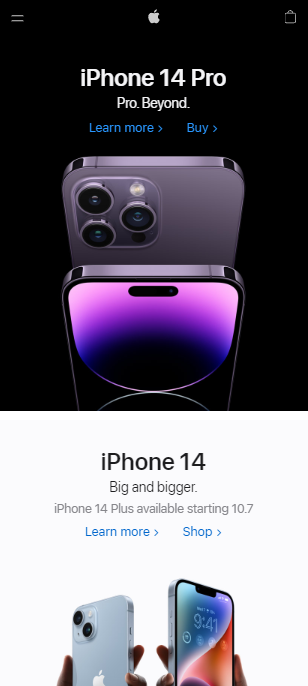
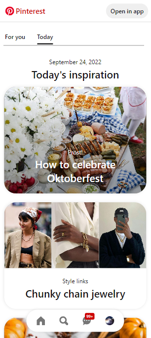

Contrast

When you first enter the apple site, your eye is instantly grabbed by the stark contrast of black and white.
The top section of the home page is black, with white lettering, and an image of dark cellphones with bright light shadows.
The bottom section of the screen is a more understated white background, with black text, and an image of lighter phones, with subtle darker shading.
Alone, these sections are sleek and well-designed. Together, they provide a striking contrast that is both sleek and eye-catching.
Alignment

When you enter the Pinterest "Today" page, it presents an orderly and elegant feel.
Not only do the rounded corners of the images, and the consistent margins, add white space that nicely balances the visual clutter produced by their product, the images.
This site is elegantly horizontally aligned on both sides.
Not only are the images aligned on both sides, but they also line up with the border line under the navigation.
Pinterest alignment is very clean and smooth.
Repetition
For a chain store known across the country, Walmart has a very recognizable theme.
This is easily noticeable from their front page.
The Walmart home page is a very competent example of Repetition.
The backgrounds are blue, the text is white, and the icons are yellow.
These colors are repeated throughout the whole page, from top to bottom.
Not only did they select a specific color scheme, but they used each color consistently.
Walmart is an excellent example of both color and repetition.